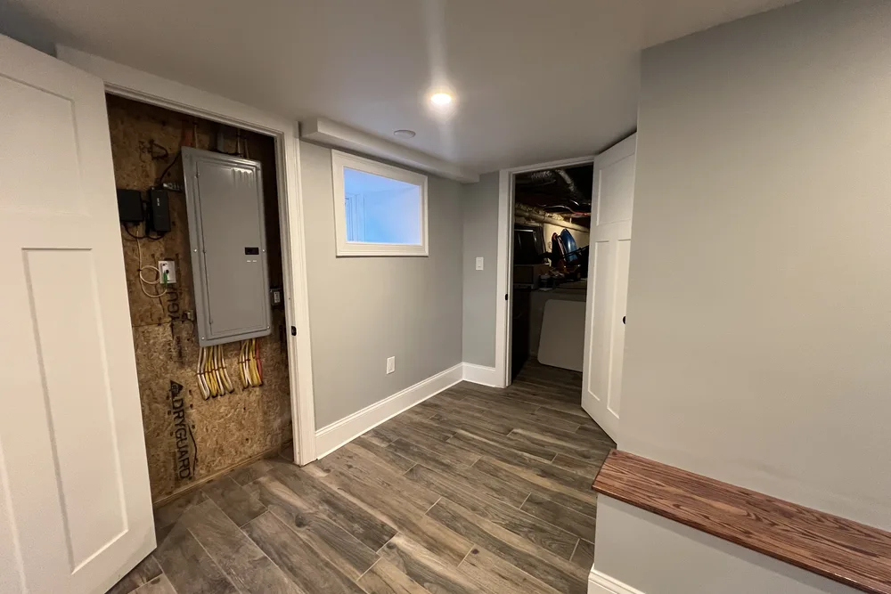
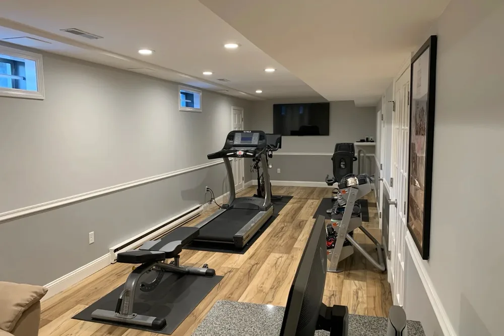
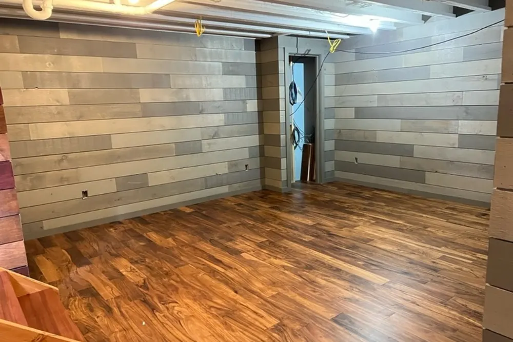
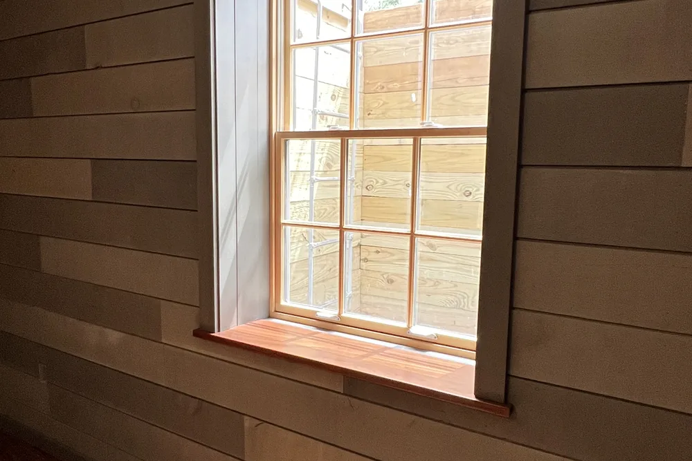
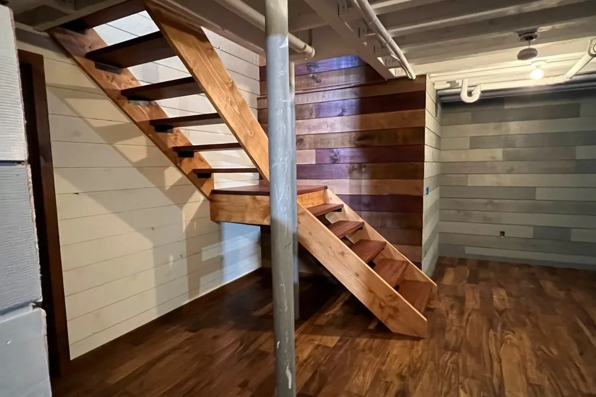
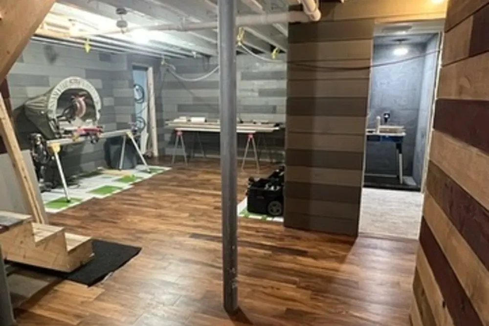
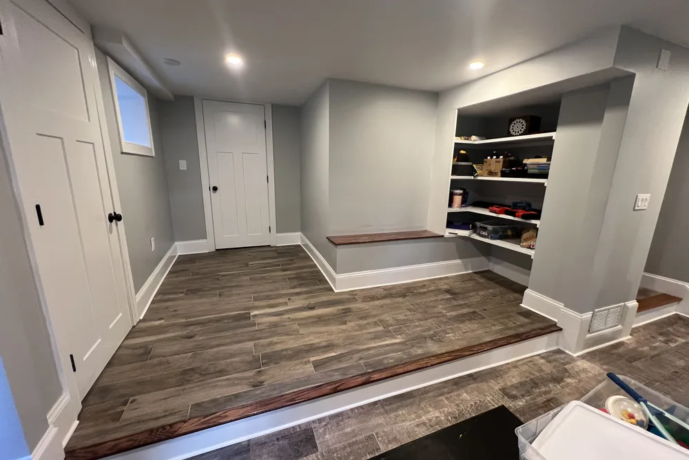
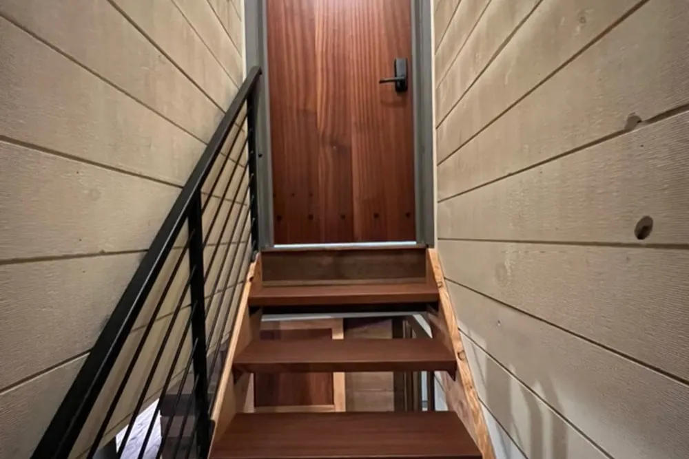

Basement finishing in Ipswich, MA
Basement finishing Ipswich MA homeowners can live in, from moisture check to move-in
Basement finishing in Ipswich with DeFaria Construction turns an unfinished lower level into dry, warm, permitted living space, planned for Essex County homes and permitted through the Town of Ipswich Building Department.
Our work
From open framing to a finished, insulated room
Watch a DeFaria conversion go from bare studs to an insulated, drywalled and painted room. A Ipswich basement follows the same sequence, with moisture control first.
Get a Free Estimate
Local search focus
A Ipswich basement starts with the walls you cannot see.

Across Meeting House Green, High Street, The East End, South Green, Great Neck and Little Neck, Ipswich holds one of the country's largest concentrations of First Period homes, with Colonial, Georgian and Federal residences and 19th-century millworker housing. A finished basement in Ipswich only lasts if moisture, insulation and air sealing are handled before the first stud goes up, so the room stays dry and warm through a New England winter.
This page is for Ipswich homeowners comparing basement finishing contractors. It covers local homes, real 2026 costs, permits, egress and the full process, with a direct path to a free estimate.
- Clear estimate conversations before the project starts.
- Direct communication with the homeowner from walkthrough to final walkthrough.
- Local coverage across Ipswich and the wider Essex County area.
The scope
What a full Ipswich basement finishing project covers

In Ipswich, one of the country's largest concentrations of First Period homes and protected historic streetscapes often add layout and access constraints.
- Foundation check, sealing and insulation first.
- Permitted electrical, plumbing and egress where needed.
- Finish work that matches the rest of the home.
Ipswich permits and inspections run through the Town of Ipswich Building Department, and DeFaria keeps that step organized so scope and timeline stay realistic.
Cost
How much does basement finishing cost in Ipswich?

Plan on roughly $35 to $90 per square foot for a Ipswich basement, which puts a typical 700 to 900 square foot project around $30,000 to $75,000 before upgrades like a bathroom or a wet bar.
- Moisture control or drainage work before framing.
- Ceiling height and ducts or beams that need soffits.
- A bathroom, wet bar or kitchenette below grade.
- An egress window for a bedroom or office.
Because one of the country's largest concentrations of First Period homes and protected historic streetscapes often add layout and access constraints in Ipswich, hidden conditions behind the walls are priced honestly at the walkthrough, not discovered mid-project.
DeFaria gives a fixed, itemized Ipswich estimate at the walkthrough, so the price follows the real basement instead of a per-foot guess.
Process
How a Ipswich basement project runs, step by step

A Ipswich basement is built in a fixed order, and each phase is inspected before the next one starts.
- Walkthrough, measurements, moisture check and a fixed estimate.
- Design and permit application with the town.
- Moisture work, rim joist sealing and any egress cut.
- Framing, foam board insulation and fire blocking.
- Rough electrical, plumbing and heat, then inspections.
- Drywall, ceilings, flooring, trim and paint.
- Final inspection and walkthrough with you.
DeFaria coordinates the Ipswich permit with the Town of Ipswich Building Department before the rough-in, and keeps you updated at each step.
Most Ipswich basements take about 6 to 10 weeks once the permit is issued.
Materials
Materials that hold up below grade in Ipswich

Because a Ipswich basement is partly underground, the assembly is built for moisture first and looks second.
- Foam insulation sealed at seams and the rim joist.
- Treated sill plates where framing meets the slab.
- Moisture-tolerant board around baths and utility areas.
- Floating, waterproof floors over a proper underlayment.
From Meeting House Green to The East End, one of the country's largest concentrations of First Period homes and protected historic streetscapes often add layout and access constraints, which is exactly why the finish is specified for the home rather than a catalog.
When to remodel
Signs a Ipswich basement is ready to finish

A few clear signs it is time to turn a Ipswich basement into living space:
- The house feels small but the lot has no room to build out.
- The basement has good height and a dry floor.
- You want a media room, bar or gym.
- An older finished basement smells damp or looks tired.
- You plan to sell and want more usable square footage.
These come up often in Ipswich homes near Meeting House Green and High Street.
Moisture
Keeping a Ipswich basement dry before it is finished

Water is the reason most finished basements fail, so every Ipswich project starts with a moisture check: grading and gutters outside, cracks and old window wells in the foundation, the sump if there is one, and the humidity after a rain.
Because one of the country's largest concentrations of First Period homes and protected historic streetscapes often add layout and access constraints, older foundations here may be stone, block or early poured concrete, and each behaves differently. We fix active water problems first and price them openly, because new drywall over a wet wall only hides the problem.
Across Ipswich neighborhoods like Meeting House Green, High Street and The East End, we plan the basement finishing around how Essex County homes are actually built, and coordinate the local approvals with Town of Ipswich Building Department.
Local context shapes the work: Ipswich holds one of the country's largest concentrations of First Period homes, with Colonial, Georgian and Federal residences and 19th-century millworker housing. We plan the Ipswich basement finishing around exactly that.
Our Ipswich basement finishing reaches Meeting House Green, High Street, The East End, South Green, Great Neck and Little Neck, matched to each area.
- Grading, gutters and downspouts checked outside.
- Foundation cracks and penetrations sealed.
- Sump and backup pump where needed.
- Dehumidifier sized for the finished space.
Insulation
Insulating Ipswich basement walls the right way
The rim joist, where the house sits on the foundation, is one of the leakiest spots in older Essex County homes. In a Ipswich basement we seal and insulate it first, then cover the foundation with rigid foam before framing.
Foam is always covered with a code-approved thermal barrier, and the result is a lower level that holds heat through a Massachusetts winter.
Across Ipswich neighborhoods like Meeting House Green, High Street and The East End, we plan the basement finishing around how Essex County homes are actually built, and coordinate the local approvals with Town of Ipswich Building Department.
We match the basement finishing to the local homes. Ipswich holds one of the country's largest concentrations of First Period homes, with Colonial, Georgian and Federal residences and 19th-century millworker housing.
Egress and code
Egress windows, ceilings and code for a Ipswich basement
If you want a guest room or a teenager's room in a Ipswich basement, plan the egress window from the start. Cutting the foundation and setting a code-size window and well is far easier before the walls are finished.
We measure ceiling height at the first visit, since ducts and beams decide whether a drywall ceiling, soffits or painted open joists make the most sense.
Across Ipswich neighborhoods like Meeting House Green, High Street and The East End, we plan the basement finishing around how Essex County homes are actually built, and coordinate the local approvals with Town of Ipswich Building Department.
We match the basement finishing to the local homes. Ipswich holds one of the country's largest concentrations of First Period homes, with Colonial, Georgian and Federal residences and 19th-century millworker housing.
- Egress window and well for every basement bedroom.
- About 7 feet of finished ceiling height for living space.
- Smoke and carbon monoxide alarms.
- Building, electrical and plumbing permits and inspections.
Bathrooms
Adding a bathroom to a Ipswich basement

A bathroom turns a Ipswich basement into a real suite. If the main drain sits below the new fixtures, they drain by gravity; if not, a sewage ejector pump or an up-flush system does the work without breaking much of the slab.
A new basement bathroom usually adds about $25,000 to $55,000, depending on how much concrete is opened and the fixtures you choose. Ventilation to the outside and moisture-resistant walls are part of every one we build.
In Ipswich, homeowners near Meeting House Green, High Street and The East End get a basement finishing scoped for the neighborhood and the Essex County housing it sits in, permitted through Town of Ipswich Building Department.
Every Ipswich basement finishing starts from the local reality. Ipswich holds one of the country's largest concentrations of First Period homes, with Colonial, Georgian and Federal residences and 19th-century millworker housing.
Ideas
Popular ways Ipswich families use a finished basement

Before design starts, we ask how the family will use the Ipswich basement on a normal Tuesday night, because that decides the layout.
For homes near Meeting House Green, High Street and The East End, the Ipswich basement finishing is planned case by case, with Essex County permits handled by Town of Ipswich Building Department.
It helps to know the housing: Ipswich holds one of the country's largest concentrations of First Period homes, with Colonial, Georgian and Federal residences and 19th-century millworker housing. The Ipswich basement finishing is scoped to fit it.
- Family room or home theater.
- Home office with a door and daylight.
- Home gym with durable flooring.
- Guest suite with egress and a bathroom.
- Playroom with built-in storage.
Timing
Why fall and winter suit a Ipswich basement project
Basement work is indoors, so snow and cold rarely slow it down. Starting a Ipswich basement in the fall usually means the room is ready for the holidays or by spring.
Searches for basement finishing contractors in Massachusetts peak in September and October for that reason, and the permit and design steps take a few weeks, so booking the walkthrough early helps.
From Meeting House Green to High Street and The East End, every Ipswich basement finishing is matched to the local housing stock in Essex County, with Town of Ipswich Building Department handling the permit side.
Local context shapes the work: Ipswich holds one of the country's largest concentrations of First Period homes, with Colonial, Georgian and Federal residences and 19th-century millworker housing. We plan the Ipswich basement finishing around exactly that.
Project photos
Finished basement photos for Ipswich homeowners
Real DeFaria basements, so Ipswich homeowners can see the finish level before requesting an estimate.
Areas covered
Basement finishing across Ipswich neighborhoods
DeFaria Construction finishes basements across Ipswich and nearby Essex County towns, with enough local context on this page to decide whether we are the right fit before you call.
Whether the home is near Meeting House Green, High Street or Little Neck, the Ipswich basement finishing is planned for the local housing stock and permitted through the Town of Ipswich Building Department.
- Meeting House Green
- High Street
- The East End
- South Green
- Great Neck
- Little Neck
Reviews
What Ipswich homeowners say about DeFaria Construction
DeFaria Construction has a 5.0 rating from 15 reviews on Google. See all reviews on Google.
Very professional, efficient and thorough. They are extremely attentive to details and are fast-paced. Best contractor I’ve worked with!
Extremely happy that I went with DeFaria Construction to renovate our half bathroom. What I appreciated most about working with Luiz is that him and his crew were honest, reliable and they really cared about the details that were important to me! Everyday they came as scheduled and every evening…
Luiz has been doing construction for us for close to 20 years. Large jobs are small. He does excellent work and we’re always very pleased with it. His quotes are always very reasonable. I would highly recommend him.
Experience
Why this Ipswich page is built for real homeowners, not just keywords.
DeFaria Construction serves homeowners and businesses throughout Middlesex County and Essex County as a local, owner-run builder. With hands-on involvement from Luiz DeFaria and A+ BBB credibility, the Ipswich basement page is written around real moisture control, insulation and finish work, not a town name dropped into a template.
DeFaria Construction is a licensed and insured local contractor with an A+ BBB rating and verified customer reviews, and every Ipswich project is owner-led by Luiz DeFaria from the first walkthrough to the final one.
"they explained every step of the Ipswich basement before the walls went up."
Ipswich homeowner

Hear from Ipswich homeowners who hired us: Read DeFaria Construction reviews on Google. BBB Accredited Business with an A+ rating since March 2024, verify on BBB.
The goal is to help someone searching for Ipswich basement finishing understand the scope, the neighborhoods covered and how to start a direct conversation before requesting a free estimate.
Call (617) 893-2221 for a free estimateFAQ
Common questions about basement finishing in Ipswich
How much does basement finishing cost in Ipswich?
Most Ipswich basements run about $35 to $90 per square foot, so a typical 700 to 900 square foot basement lands roughly between $30,000 and $75,000. Moisture work, a bathroom or an egress window add to that. DeFaria gives a fixed, itemized estimate at the walkthrough.
Do I need a permit to finish a basement in Ipswich?
Yes. Turning a basement into living space needs a building permit, and electrical and plumbing work need their own permits by licensed trades. Ipswich permits and inspections run through the Town of Ipswich Building Department, and DeFaria keeps that step organized so scope and timeline stay realistic.
How long does it take to finish a basement in Ipswich?
Most Ipswich basements take about 6 to 10 weeks once the permit is issued, longer with a bathroom, an egress window or moisture repairs.
Do I need an egress window in my Ipswich basement?
Any basement bedroom needs a code-size emergency escape window and well. A family room, office or gym without a sleeping room usually does not, but alarms, stairs and ceiling height still have to meet code.
Can you finish a Ipswich basement that gets water?
Only after the water problem is fixed. We check grading, gutters, cracks, the sump and humidity first, and price any drainage or waterproofing separately and openly.
Is DeFaria Construction licensed and insured?
Yes. DeFaria Construction is a licensed and insured contractor with an A+ BBB rating and verified Google reviews, and every Ipswich basement is owner-led by Luiz DeFaria.